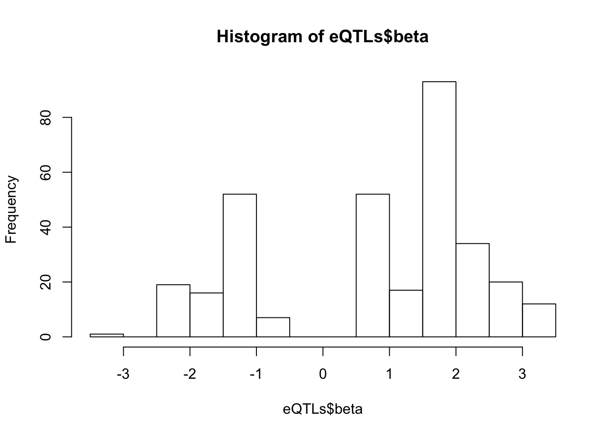

20190502_Check_eQTLs
Last updated: 2019-05-02
Checks: 5 1
Knit directory: Comparative_eQTL/analysis/
This reproducible R Markdown analysis was created with workflowr (version 1.2.0). The Report tab describes the reproducibility checks that were applied when the results were created. The Past versions tab lists the development history.
The R Markdown is untracked by Git. To know which version of the R Markdown file created these results, you’ll want to first commit it to the Git repo. If you’re still working on the analysis, you can ignore this warning. When you’re finished, you can run wflow_publish to commit the R Markdown file and build the HTML.
Great job! The global environment was empty. Objects defined in the global environment can affect the analysis in your R Markdown file in unknown ways. For reproduciblity it’s best to always run the code in an empty environment.
The command set.seed(20190319) was run prior to running the code in the R Markdown file. Setting a seed ensures that any results that rely on randomness, e.g. subsampling or permutations, are reproducible.
Great job! Recording the operating system, R version, and package versions is critical for reproducibility.
Nice! There were no cached chunks for this analysis, so you can be confident that you successfully produced the results during this run.
Great! You are using Git for version control. Tracking code development and connecting the code version to the results is critical for reproducibility. The version displayed above was the version of the Git repository at the time these results were generated.
Note that you need to be careful to ensure that all relevant files for the analysis have been committed to Git prior to generating the results (you can use wflow_publish or wflow_git_commit). workflowr only checks the R Markdown file, but you know if there are other scripts or data files that it depends on. Below is the status of the Git repository when the results were generated:
Ignored files:
Ignored: .DS_Store
Ignored: .Rhistory
Ignored: .Rproj.user/
Ignored: analysis/.DS_Store
Ignored: analysis_temp/.DS_Store
Ignored: data/.DS_Store
Ignored: data/PastAnalysesDataToKeep/.DS_Store
Ignored: docs/.DS_Store
Ignored: docs/assets/.DS_Store
Untracked files:
Untracked: analysis/20190502_Check_eQTLs.Rmd
Untracked: analysis_temp/20190412_Check_eQTLs.Rmd
Untracked: data/PastAnalysesDataToKeep/20190428_log10TPM.txt.gz
Unstaged changes:
Deleted: analysis/20190412_Check_eQTLs.Rmd
Modified: analysis/20190428_Check_eQTLs.Rmd
Modified: analysis/index.Rmd
Note that any generated files, e.g. HTML, png, CSS, etc., are not included in this status report because it is ok for generated content to have uncommitted changes.
These are the previous versions of the R Markdown and HTML files. If you’ve configured a remote Git repository (see ?wflow_git_remote), click on the hyperlinks in the table below to view them.
| File | Version | Author | Date | Message |
|---|---|---|---|---|
| html | 8ab5bbf | Benjmain Fair | 2019-05-02 | update site |
library(plyr)
library(tidyverse)
library(knitr)
library(data.table)My third pass at eqtl mapping was as follows: Genotypes filtered for MAF>0.5 & GenotypingRate>0.9, HWE-pvalue<10e-7.5. ~9.5M variants passed these filter. Gene expression as log(CPM), filtering for genes with 80% of samples > 10 reads on the gene. CPM was then standardized across individuals and quantile normalized to a normal distribution across genes. Sample MD_And was dropped from analysis because it was previously shown to be an outlier that caused spurious associations. Association testing used the following linear mixed model for each cis-variant-gene-pair (cis definied as <1Mb from gene):
\[ Y =Wα+xβ+u+ε \]
where \(Y\) is gene expression as \(log(TPM)\), \(W\) covariates include first three genotype principal components (to account for population structure) as well as 4 RNA-seq PCs, Sex, an interceptm and 3 genotype PCs. \(x\) is coded as 0,1,2, \(U \sim MVN(0,\sigma^2 K)\) where \(K\) an centered kinship matrix made from gemma software.
Association testing was implemented in the R package ‘MatrixEQTL’. I can see clear enrichment of small P-values compared to a single-pass label-permutated null. (Insert images here).
For this analysis I somewhat arbitraily choose a P-value threshold to further examine hits of 1e-6 since this is where I see deviation from the permutated null. At this threshold, I estimate FDR~20% (num of hits in real data versus permuted.)
Permuted null.

Real data.
# Read in genotypes for eQTLs
Genotypes <- read.table("../data/PastAnalysesDataToKeep/20190502_SigQTLs.genotypes.txt.raw", header=T, check.names = F, stringsAsFactors = F)
colnames(Genotypes) <- sub("_.*", "", colnames(Genotypes))
# Genotypes[!duplicated(as.list(Genotypes))]
kable(Genotypes[1:10,1:10])| FID | IID | PAT | MAT | SEX | PHENOTYPE | ID.1.86828485.T.A | ID.1.86828535.G.A | ID.1.111601813.C.CA | ID.1.126448217.G.C |
|---|---|---|---|---|---|---|---|---|---|
| Pan_troglodytes_ThisStudy | 549 | 0 | 0 | 0 | -1.477010 | 1 | 1 | 0 | 2 |
| Pan_troglodytes_ThisStudy | 570 | 0 | 0 | 0 | 0.251131 | 0 | 0 | 1 | 1 |
| Pan_troglodytes_ThisStudy | 389 | 0 | 0 | 0 | -1.424030 | 0 | 0 | 0 | 1 |
| Pan_troglodytes_ThisStudy | 456 | 0 | 0 | 0 | -0.598015 | 0 | 0 | 0 | 1 |
| Pan_troglodytes_ThisStudy | 623 | 0 | 0 | 0 | -1.562730 | 0 | 0 | 0 | 1 |
| Pan_troglodytes_ThisStudy | 438 | 0 | 0 | 0 | -0.381954 | 2 | 2 | 0 | 0 |
| Pan_troglodytes_ThisStudy | 724 | 0 | 0 | 0 | -0.643564 | 1 | 1 | 0 | 0 |
| Pan_troglodytes_ThisStudy | 522 | 0 | 0 | 0 | -1.367200 | 0 | 0 | 0 | 1 |
| Pan_troglodytes_ThisStudy | 338 | 0 | 0 | 0 | -2.050590 | 0 | 0 | 0 | 2 |
| Pan_troglodytes_ThisStudy | 476 | 0 | 0 | 0 | -1.761790 | 0 | 0 | 0 | 2 |
#Make sure there aren't duplicate columns
length(colnames(Genotypes))[1] 289length(unique(colnames(Genotypes)))[1] 289# Read in eQTLs from MatrixEQTL output (already filtered for FDR<0.1)
eQTLs <- read.table("../data/PastAnalysesDataToKeep/20190502_SigQTLs.txt", header=T)
kable(head(eQTLs))| SNP | gene | beta | t.stat | p.value | FDR |
|---|---|---|---|---|---|
| ID.1.126459696.ACCCTAGTAAG.A | ENSPTRG00000001061 | 3.451377 | 12.51696 | 0 | 4.1e-06 |
| ID.1.126465687.TTGT.A | ENSPTRG00000001061 | 3.451377 | 12.51696 | 0 | 4.1e-06 |
| ID.1.126465750.TG.CT | ENSPTRG00000001061 | 3.451377 | 12.51696 | 0 | 4.1e-06 |
| ID.1.126465756.T.C | ENSPTRG00000001061 | 3.451377 | 12.51696 | 0 | 4.1e-06 |
| ID.1.126465766.C.A | ENSPTRG00000001061 | 3.451377 | 12.51696 | 0 | 4.1e-06 |
| ID.1.126465774.G.A | ENSPTRG00000001061 | 3.451377 | 12.51696 | 0 | 4.1e-06 |
SampleList <- read.table("../output/ForAssociationTesting.temp.fam")$V2
# This count table is the log10(TPM); no standardization or quantile normalization
# Read in phenotypes, from count table
CountTable <- read.table('../output/ExpressionMatrix.un-normalized.txt.gz', header=T, check.names=FALSE, row.names = 1) %>%
t() %>%
as.data.frame() %>%
rownames_to_column(var = "FID") %>%
filter(FID %in% SampleList)
kable(CountTable[1:10, 1:10])| FID | ENSPTRG00000049558 | ENSPTRG00000039445 | ENSPTRG00000039924 | ENSPTRG00000052382 | ENSPTRG00000000008 | ENSPTRG00000044847 | ENSPTRG00000050180 | ENSPTRG00000042781 | ENSPTRG00000046221 |
|---|---|---|---|---|---|---|---|---|---|
| 4X0095 | -5.695140 | -6.671455 | -5.853993 | -5.654850 | -5.726003 | -5.089461 | -3.904632 | -5.363930 | -5.748125 |
| 4X0212 | -5.955700 | -5.579218 | -4.866750 | -5.520383 | -6.155279 | -5.063163 | -3.930433 | -5.288038 | -5.913821 |
| 4X0267 | -5.527135 | -6.087954 | -5.379523 | -5.086716 | -5.540719 | -5.451939 | -3.839953 | -5.221387 | -5.265197 |
| 4X0333 | -5.407258 | -6.339078 | -5.807923 | -5.394110 | -6.091672 | -5.444471 | -3.856865 | -4.915571 | -5.224808 |
| 4X0339 | -5.398031 | -5.475942 | -5.970879 | -5.594902 | -5.998008 | -5.310448 | -4.047936 | -5.663680 | -5.568562 |
| 4X0354 | -5.408309 | -5.440178 | -5.305725 | -5.186852 | -5.823908 | -4.780132 | -4.286870 | -5.540719 | -5.679183 |
| 4X0357 | -5.471771 | -5.785647 | -5.068470 | -5.411878 | -5.529892 | -5.061773 | -4.052313 | -5.531576 | -5.710388 |
| 4X0550 | -6.010543 | -6.042524 | -5.465578 | -5.499653 | -5.826660 | -5.284499 | -3.963313 | -5.471584 | -5.963660 |
| 4x0025 | -5.702836 | -6.867821 | -5.566591 | -5.716003 | -6.103983 | -5.418102 | -3.767671 | -5.383699 | -5.754655 |
| 4x0043 | -5.857781 | -7.162567 | -5.171515 | -5.646026 | -6.125135 | -5.437957 | -4.103136 | -5.225135 | -5.773708 |
MergedData <- left_join(Genotypes, CountTable, by=c("IID" = "FID")) %>%
as.data.frame()#eqtls, ordered from most significant at top
kable(head(eQTLs))| SNP | gene | beta | t.stat | p.value | FDR |
|---|---|---|---|---|---|
| ID.1.126459696.ACCCTAGTAAG.A | ENSPTRG00000001061 | 3.451377 | 12.51696 | 0 | 4.1e-06 |
| ID.1.126465687.TTGT.A | ENSPTRG00000001061 | 3.451377 | 12.51696 | 0 | 4.1e-06 |
| ID.1.126465750.TG.CT | ENSPTRG00000001061 | 3.451377 | 12.51696 | 0 | 4.1e-06 |
| ID.1.126465756.T.C | ENSPTRG00000001061 | 3.451377 | 12.51696 | 0 | 4.1e-06 |
| ID.1.126465766.C.A | ENSPTRG00000001061 | 3.451377 | 12.51696 | 0 | 4.1e-06 |
| ID.1.126465774.G.A | ENSPTRG00000001061 | 3.451377 | 12.51696 | 0 | 4.1e-06 |
# betas for these
hist(eQTLs$beta, breaks=20)
| Version | Author | Date |
|---|---|---|
| 8ab5bbf | Benjmain Fair | 2019-05-02 |
#how many snps
length(unique(eQTLs$SNP))[1] 303#how many genes
length(unique(eQTLs$gene))[1] 43# Expression box plot, stratified by genotype. For a fe of top of the list snp-gene pairs (most significant)
MyBoxplot <- function(DataFrame, Labels.name, SNP.name, Gene.name){
data.frame(Genotype = DataFrame[[SNP.name]],
Phenotype = DataFrame[[Gene.name]],
FID=DataFrame[[Labels.name]]) %>%
ggplot(aes(x=factor(Genotype), y=Phenotype, label=FID)) +
geom_boxplot(outlier.shape = NA) +
geom_text(position=position_jitter(width=0.25), alpha=1, size=2) +
scale_y_continuous(name=paste("log10(CPM)", Gene.name)) +
xlab(SNP.name)
}
MyBoxplot(MergedData, "IID", as.character("ID.1.126465756.T.C"), as.character("ENSPTRG00000001061"))
| Version | Author | Date |
|---|---|---|
| 8ab5bbf | Benjmain Fair | 2019-05-02 |
set.seed(1)
RandomSampleOfEqtls <- eQTLs %>% sample_n(20) %>% select(SNP, gene, beta)
kable(RandomSampleOfEqtls)| SNP | gene | beta |
|---|---|---|
| ID.3.191229623.G.A | ENSPTRG00000015723 | 1.5028963 |
| ID.16.897868.C.T | ENSPTRG00000043562 | 1.4521231 |
| ID.22.9778506.G.A | ENSPTRG00000050283 | 1.6316490 |
| ID.17.79239982.G.GC | ENSPTRG00000009718 | 1.9156964 |
| ID.16.883949.T.C | ENSPTRG00000043562 | 1.5270133 |
| ID.17.79219234.T.C | ENSPTRG00000009718 | 1.9156964 |
| ID.6.29950343.G.C | ENSPTRG00000017910 | -1.6662477 |
| ID.16.878009.G.A | ENSPTRG00000043562 | 1.6952838 |
| ID.4.155556624.C.T | ENSPTRG00000016513 | 0.9193094 |
| ID.1.126472040.TG.AC | ENSPTRG00000001061 | -1.5204355 |
| ID.17.16568154.G.C | ENSPTRG00000009113 | -2.4961935 |
| ID.3.191230753.G.A | ENSPTRG00000015723 | -1.2049022 |
| ID.16.902411.TG.T | ENSPTRG00000043562 | 1.6952838 |
| ID.17.16581604.A.G | ENSPTRG00000009113 | -2.4961935 |
| ID.15.43811608.G.A | ENSPTRG00000007149 | 2.4799860 |
| ID.19.24829896.G.T | ENSPTRG00000046645 | -1.3179527 |
| ID.10.113114615.T.TA | ENSPTRG00000034485 | -1.3459191 |
| ID.6.29968501.C.T | ENSPTRG00000017910 | -1.6662477 |
| ID.19.47383315.C.T | ENSPTRG00000051128 | 1.9292763 |
| ID.18.66101293.GTA.G | ENSPTRG00000046320 | -1.1460355 |
for(i in 1:nrow(RandomSampleOfEqtls)) {
try(
print(MyBoxplot(MergedData, "IID", as.character(RandomSampleOfEqtls$SNP[i]), as.character(RandomSampleOfEqtls$gene[i])))
)
}Error in data.frame(Genotype = DataFrame[[SNP.name]], Phenotype = DataFrame[[Gene.name]], :
arguments imply differing number of rows: 0, 38
| Version | Author | Date |
|---|---|---|
| 8ab5bbf | Benjmain Fair | 2019-05-02 |
| Version | Author | Date |
|---|---|---|
| 8ab5bbf | Benjmain Fair | 2019-05-02 |
| Version | Author | Date |
|---|---|---|
| 8ab5bbf | Benjmain Fair | 2019-05-02 |
| Version | Author | Date |
|---|---|---|
| 8ab5bbf | Benjmain Fair | 2019-05-02 |
| Version | Author | Date |
|---|---|---|
| 8ab5bbf | Benjmain Fair | 2019-05-02 |
| Version | Author | Date |
|---|---|---|
| 8ab5bbf | Benjmain Fair | 2019-05-02 |
| Version | Author | Date |
|---|---|---|
| 8ab5bbf | Benjmain Fair | 2019-05-02 |
| Version | Author | Date |
|---|---|---|
| 8ab5bbf | Benjmain Fair | 2019-05-02 |
| Version | Author | Date |
|---|---|---|
| 8ab5bbf | Benjmain Fair | 2019-05-02 |
| Version | Author | Date |
|---|---|---|
| 8ab5bbf | Benjmain Fair | 2019-05-02 |
Error in data.frame(Genotype = DataFrame[[SNP.name]], Phenotype = DataFrame[[Gene.name]], :
arguments imply differing number of rows: 0, 38
| Version | Author | Date |
|---|---|---|
| 8ab5bbf | Benjmain Fair | 2019-05-02 |
| Version | Author | Date |
|---|---|---|
| 8ab5bbf | Benjmain Fair | 2019-05-02 |
| Version | Author | Date |
|---|---|---|
| 8ab5bbf | Benjmain Fair | 2019-05-02 |
| Version | Author | Date |
|---|---|---|
| 8ab5bbf | Benjmain Fair | 2019-05-02 |
| Version | Author | Date |
|---|---|---|
| 8ab5bbf | Benjmain Fair | 2019-05-02 |
| Version | Author | Date |
|---|---|---|
| 8ab5bbf | Benjmain Fair | 2019-05-02 |
| Version | Author | Date |
|---|---|---|
| 8ab5bbf | Benjmain Fair | 2019-05-02 |
| Version | Author | Date |
|---|---|---|
| 8ab5bbf | Benjmain Fair | 2019-05-02 |
# List of chimp tested genes
ChimpTestedGenes <- rownames(read.table('../output/ExpressionMatrix.un-normalized.txt.gz', header=T, check.names=FALSE, row.names = 1))
ChimpToHumanGeneMap <- read.table("../data/Biomart_export.Hsap.Ptro.orthologs.txt.gz", header=T, sep='\t', stringsAsFactors = F)
kable(head(ChimpToHumanGeneMap))| Gene.stable.ID | Transcript.stable.ID | Chimpanzee.gene.stable.ID | Chimpanzee.gene.name | Chimpanzee.protein.or.transcript.stable.ID | Chimpanzee.homology.type | X.id..target.Chimpanzee.gene.identical.to.query.gene | X.id..query.gene.identical.to.target.Chimpanzee.gene | dN.with.Chimpanzee | dS.with.Chimpanzee | Chimpanzee.orthology.confidence..0.low..1.high. |
|---|---|---|---|---|---|---|---|---|---|---|
| ENSG00000198888 | ENST00000361390 | ENSPTRG00000042641 | MT-ND1 | ENSPTRP00000061407 | ortholog_one2one | 94.6541 | 94.6541 | 0.0267 | 0.5455 | 1 |
| ENSG00000198763 | ENST00000361453 | ENSPTRG00000042626 | MT-ND2 | ENSPTRP00000061406 | ortholog_one2one | 96.2536 | 96.2536 | 0.0185 | 0.7225 | 1 |
| ENSG00000210127 | ENST00000387392 | ENSPTRG00000042642 | MT-TA | ENSPTRT00000076396 | ortholog_one2one | 100.0000 | 100.0000 | NA | NA | NA |
| ENSG00000198804 | ENST00000361624 | ENSPTRG00000042657 | MT-CO1 | ENSPTRP00000061408 | ortholog_one2one | 98.8304 | 98.8304 | 0.0065 | 0.5486 | 1 |
| ENSG00000198712 | ENST00000361739 | ENSPTRG00000042660 | MT-CO2 | ENSPTRP00000061402 | ortholog_one2one | 97.7974 | 97.7974 | 0.0106 | 0.5943 | 1 |
| ENSG00000228253 | ENST00000361851 | ENSPTRG00000042653 | MT-ATP8 | ENSPTRP00000061400 | ortholog_one2one | 94.1176 | 94.1176 | 0.0325 | 0.3331 | 1 |
# Of this ortholog list, how many genes are one2one
table(ChimpToHumanGeneMap$Chimpanzee.homology.type)
ortholog_many2many ortholog_one2many ortholog_one2one
2278 19917 140351 OneToOneMap <- ChimpToHumanGeneMap %>%
filter(Chimpanzee.homology.type=="ortholog_one2one")
# Read gtex heart egene list
GtexHeartEgenes <- read.table("../data/Heart_Left_Ventricle.v7.egenes.txt.gz", header=T, sep='\t', stringsAsFactors = F) %>%
mutate(gene_id_stable = gsub(".\\d+$","",gene_id)) %>%
filter(gene_id_stable %in% OneToOneMap$Gene.stable.ID) %>%
mutate(chimp_id = plyr::mapvalues(gene_id_stable, OneToOneMap$Gene.stable.ID, OneToOneMap$Chimpanzee.gene.stable.ID, warn_missing = F)) %>%
filter(chimp_id %in% ChimpTestedGenes)
length(GtexHeartEgenes$gene_id_stable)[1] 11586length(OneToOneMap$Gene.stable.ID)[1] 140351length(intersect(GtexHeartEgenes$gene_id_stable, OneToOneMap$Gene.stable.ID))[1] 11586HumanSigGenes <- GtexHeartEgenes %>%
filter(qval<0.05) %>%
pull(chimp_id)
HumanNonSigGenes <- GtexHeartEgenes %>%
filter(qval>0.05) %>%
pull(chimp_id)
ChimpSigGenes <- GtexHeartEgenes %>%
filter(chimp_id %in% eQTLs$gene) %>%
pull(chimp_id)
ChimpNonSigGenes <- GtexHeartEgenes %>%
filter(! chimp_id %in% eQTLs$gene) %>%
pull(chimp_id)
matrix( c( length(intersect(ChimpSigGenes,HumanSigGenes)),length(intersect(HumanSigGenes,ChimpNonSigGenes)),
length(intersect(ChimpSigGenes,HumanNonSigGenes)), length(intersect(ChimpNonSigGenes,HumanNonSigGenes)), nrow = 2)) [,1]
[1,] 15
[2,] 4225
[3,] 18
[4,] 7328
[5,] 2ContigencyTable <- matrix(c(15,4225,18,7328), nrow=2)
#Contigency table of one to one orthologs tested in both chimps and humans of whether significant in humans, or chimps, or both, or neither
ContigencyTable [,1] [,2]
[1,] 15 18
[2,] 4225 7328fisher.test(ContigencyTable)
Fisher's Exact Test for Count Data
data: ContigencyTable
p-value = 0.2846
alternative hypothesis: true odds ratio is not equal to 1
95 percent confidence interval:
0.677282 3.040443
sample estimates:
odds ratio
1.445263
sessionInfo()R version 3.5.1 (2018-07-02)
Platform: x86_64-apple-darwin15.6.0 (64-bit)
Running under: macOS 10.14
Matrix products: default
BLAS: /Library/Frameworks/R.framework/Versions/3.5/Resources/lib/libRblas.0.dylib
LAPACK: /Library/Frameworks/R.framework/Versions/3.5/Resources/lib/libRlapack.dylib
locale:
[1] en_US.UTF-8/en_US.UTF-8/en_US.UTF-8/C/en_US.UTF-8/en_US.UTF-8
attached base packages:
[1] stats graphics grDevices utils datasets methods base
other attached packages:
[1] data.table_1.12.0 knitr_1.22 forcats_0.4.0
[4] stringr_1.4.0 dplyr_0.8.0.1 purrr_0.3.2
[7] readr_1.3.1 tidyr_0.8.2 tibble_2.1.1
[10] ggplot2_3.1.0 tidyverse_1.2.1 plyr_1.8.4
loaded via a namespace (and not attached):
[1] Rcpp_1.0.1 highr_0.8 cellranger_1.1.0 compiler_3.5.1
[5] pillar_1.3.1 git2r_0.24.0 workflowr_1.2.0 tools_3.5.1
[9] digest_0.6.18 lubridate_1.7.4 jsonlite_1.6 evaluate_0.13
[13] nlme_3.1-137 gtable_0.3.0 lattice_0.20-38 pkgconfig_2.0.2
[17] rlang_0.3.3 cli_1.1.0 rstudioapi_0.10 yaml_2.2.0
[21] haven_2.1.0 xfun_0.6 withr_2.1.2 xml2_1.2.0
[25] httr_1.4.0 hms_0.4.2 generics_0.0.2 fs_1.2.6
[29] rprojroot_1.3-2 grid_3.5.1 tidyselect_0.2.5 glue_1.3.1
[33] R6_2.4.0 readxl_1.1.0 rmarkdown_1.11 modelr_0.1.4
[37] magrittr_1.5 whisker_0.3-2 backports_1.1.3 scales_1.0.0
[41] htmltools_0.3.6 rvest_0.3.2 assertthat_0.2.1 colorspace_1.4-1
[45] labeling_0.3 stringi_1.4.3 lazyeval_0.2.2 munsell_0.5.0
[49] broom_0.5.1 crayon_1.3.4